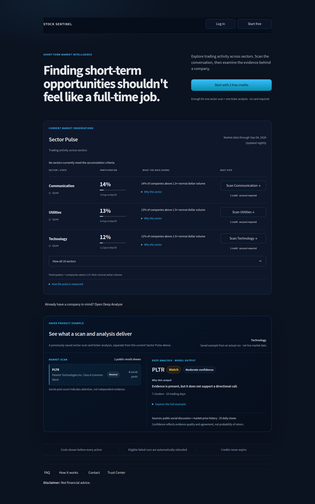
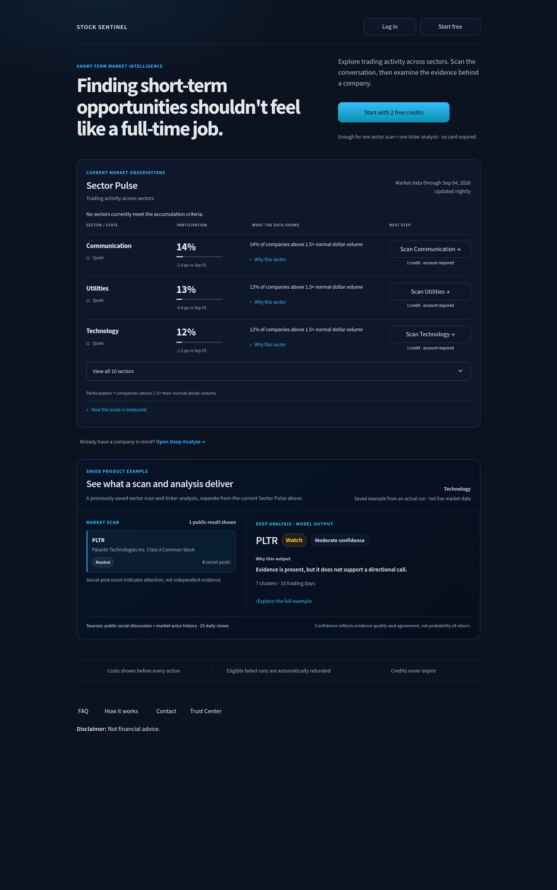

Actual application screenshots before and after the aesthetic pass. Both show the same September 4 observations and published PLTR example.


Click either screenshot to inspect it at full resolution.